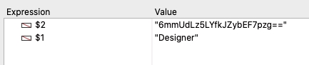
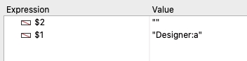

Tech Tip: Sending Un-Hashed Password with Open Datastore
PRODUCT: 4D | VERSION: 18 | PLATFORM: Mac & Win |
https://kb.4d.com/assetid=78586
Published On: November 24, 2020
The
Open Datastore
command can be useful for accessing data in an external 4D database. Using
Open Datastore
creates a REST session and triggers the On REST Authentication database method on the REST server. When a REST connection reqest is made from
Open datastore
, the password is always sent and recieved in hashed form. An example of this is shown below.
Method to request connection to remote datastore. In the $connectTo object, the session username is "Designer" and the password is "a".
|
C_OBJECT(
$connectTo;
$remoteDS)
$connectTo:= New object $connectTo .type:="4D Server" $connectTo .hostname:="{Server IP}:{Port}" $connectTo .user:="Designer" $connectTo .password:="a" $remoteDS:= Open datastore( $connectTo;"myLocalId") |
However, in the on REST Authentication database method on the server, the password received in $2 is in hashed format.

Sometimes retrieving the un-hashed password may be desired when working with user lists that are external to the 4D database. To send and retrieve un-hashed passwords with Open datastore , the session username and passord can be sent in a combined string in $connectTo.user. An example of thie is shown below.
Method to request connection to remote datastore. The session username and password are combined and passed as the username ("Designer:a").
|
C_OBJECT(
$connectTo;
$remoteDS)
$connectTo:= New object $connectTo .type:="4D Server" $connectTo .hostname:="{Server IP}:{Port}" $connectTo .user:="Designer:a" $remoteDS:= Open datastore( $connectTo;"myLocalId") |
The username and the un-hashed password are retreived as the username in $1 in the On REST Authentication database method.

The un-hashed password can then be collected from $1. The code below shows an example of this.
|
$UserPass_t:=
$1
$UserPass_c:= Split string( $UserPass_t;":") If ( $UserPass_c .length=2) $username:= $UserPass_c[0] $password:= $UserPass_c[1] End if |